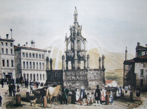
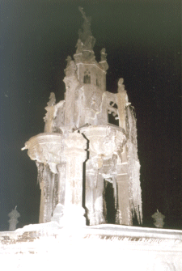
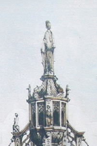

|

|


Une estampe ancienne nous montre la fontaine d'Amboise dite "la fontaine baladeuse" quand elle se trouvait Place Delille. Pourquoi ces changement ? est-ce l'auteur de l'estampe qui a "amélioré " la fontaine ???


L'hiver elle se couvre parfois de glace ... Le "sauvage" qui domine la fontaine actuelle. Détail de l'estampe ... ce n'est pas le "sauvage" !!! Les"balades" de cette fontaine : je l'ai connue au carrefour de l'avenue Carnot et du Cours Sablon ...